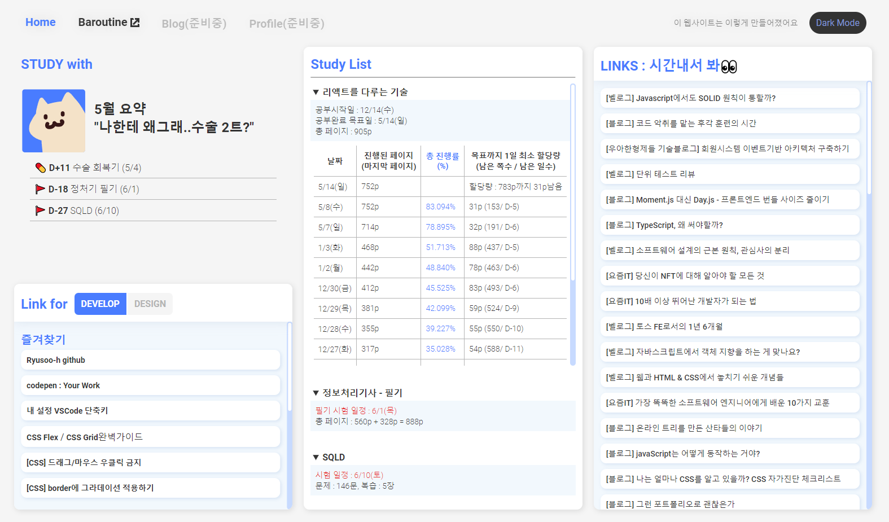
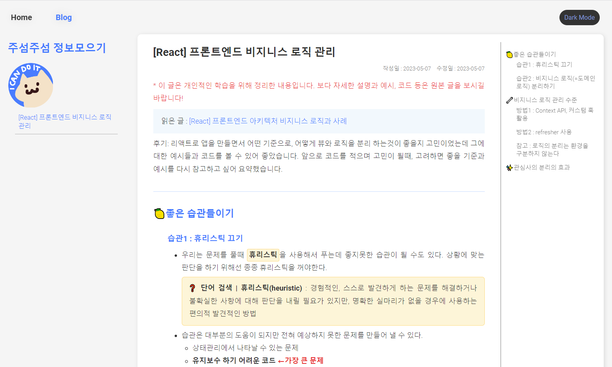

Design
컨셉
나한테 필요한것을 모은 MyBoard
- 제작 동기
- 공부 기록 및 진척도 관리 보드가 필요함
- 조건
- 자주 찾게되는 링크를 모아둔 즐겨찾기가 필요함
- 다음에 보려고 미뤄둔 링크를 보여주는 링크 리스트가 필요함
- 추가/삭제가 편한 구조
- 한눈에 보고싶어서 대시보드를 택함
- 당장은 조금 불편하더라도 사용하면서 조금씩 고칠듯 함
내가 쓰고 보기 편한 블로그(추가 : 2023-05-10~)
- 제작 동기
- notion엔 너무 많은 글이 쌓여 폴더가 깊어지니 글 찾기가 어려워짐
.'.글 정리도 할겸, 찾아봤던 글들은 블로그로 분리하려고 추가함 - velog 쓰려다 안되는게 많아서 불편해서 따로 만들어보자 함
- notion엔 너무 많은 글이 쌓여 폴더가 깊어지니 글 찾기가 어려워짐
- 조건
- 좌측에 글 목록 메뉴가 있어야함
- 우측에 게시글이 있어야함
- 게시글 우측에 velog처럼 제목 앵커 메뉴가 있어야함
- 글 작성이 편해야함
컬러
- 기본 컬러파레트 : 시원 뚜렷한 파랑!
● #497CFF ● #C7DAFF ● #F2F8FD
● #333333 ● #7B7B7B ● #B4B4B4 ● #DDDDDD ● #F5F5F5 - 블로그 컬러파레트
● #fddc84 ● #fdf5d8 ● #0fb0c5 ● #f1f9f9 ● #4479ff
파비콘
- 파비콘은 버블밀크티입니다
(최애음료 : 공차블랙밀크티펄추가당도100%)
- 원래는 밀크티에 물든 고양이였으나 16x16은 너무 작아서 형체가 잘보이지 않더군요..ㅠ


- 아쉬운대로 월별 프로필로 사용할 예정
힘듬
무난함
바쁨
신남
컬러팔레트 : ● #497CFF ● #F4E2C8 ● #371717 ● #FF3838